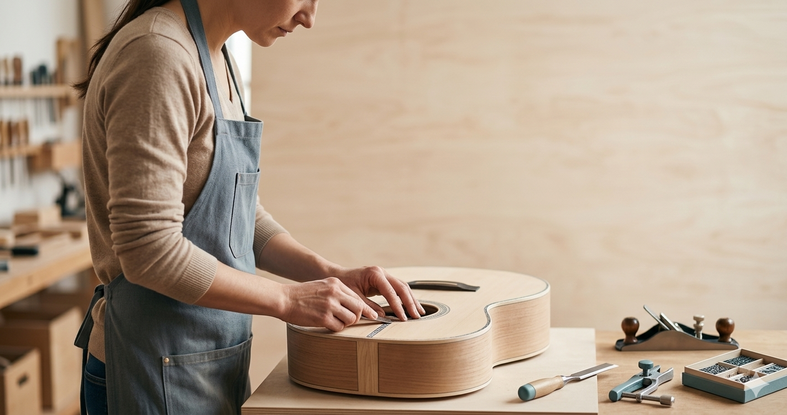
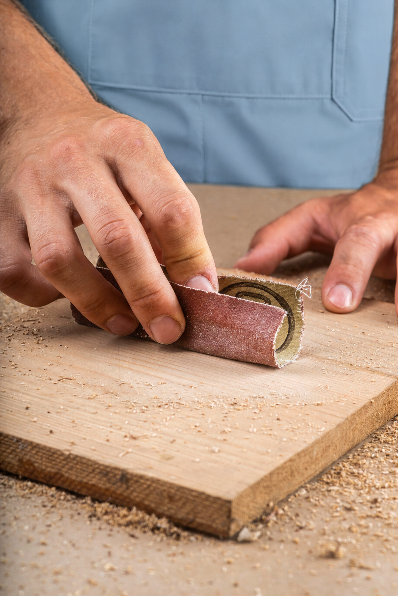
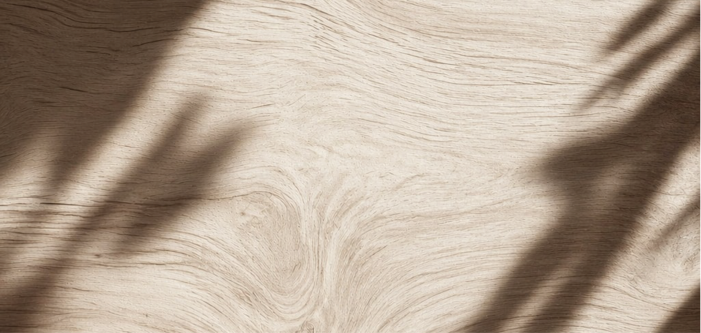

El arte de
crear sonido
Conocé nuestros cursos




Somos un espacio dedicado a formar Luthiers especializados en la construcción, restauración y ajuste de instrumentos, combinando técnicas artesanales con una metodología práctica.
Ofrecemos cursos para quienes desean iniciarse como para quienes buscan perfeccionarse, aprendiendo el oficio desde la experiencia del taller.
Conocé más →
Cada instrumento que construís refleja paciencia y presición.
01.
No enseñamos a ensamblar piezas. Formamos luthiers capaces de construir, ajustar y restaurar guitarras con el nivel técnico que exige el oficio profesional.
Aprendizaje 100% práctico: construís instrumentos reales desde el primer día. Grupos de máximo 6 alumnos para seguimiento personalizado.
Ver cursos


02
Cada instrumento que sale de TRASTES es una pieza única. No fabricamos en serie: cada guitar lleva la firma del luthier que la construyó, milímetro a milímetro.
Reservar lugar →


SERVICES & PORTFOLIO
Taller totalmente equipado con herramientas profesionales. Sin necesidad de invertir para empezar. Método paso a paso diseñado para avanzar con seguridad y confianza desde el día uno.
about us
TRASTES es una escuela de luthería fundada en Buenos Aires con más de 18 años de trayectoria. Formamos luthiers con el nivel técnico que exige el oficio profesional, transmitiendo un conocimiento que hasta hace poco solo circulaba entre maestros y aprendices.

The Approach
Cuatro módulos progresivos que te llevan desde cero hasta la práctica profesional independiente.


Cada módulo incluye práctica real en taller con herramientas profesionales. No hay teoría sin herramienta en mano.
Inscribirme →
"Jamás imaginé construir mi primera guitarra con este nivel de detalle."

"Hoy realizo calibraciones profesionalmente. El curso cambió mi relación con los instrumentos."

"Descubrí un oficio que cambió mi vida. La luthería me dio identidad y trabajo."
FAQS
La formación completa tiene una duración de 8 meses, dividida en cuatro módulos. Hay opciones de cursada intensiva o extendida según tu disponibilidad.
No. El programa está diseñado para comenzar desde cero. Solo necesitás disposición para aprender y trabajo manual.
Máximo 6 alumnos por grupo. Esta restricción es fundamental para garantizar seguimiento personalizado en cada etapa.
El taller cuenta con todas las herramientas necesarias. Los materiales de construcción están incluidos en el arancel. Solo necesitás ropa cómoda de trabajo.
Sí. Al completar los cuatro módulos recibís un certificado de formación emitido por TRASTES Escuela de Luthería.

Admission
"Donde la tradición se encuentra con la precisión."
Tu solicitud fue recibida.
Te contactamos en las próximas 48 horas.